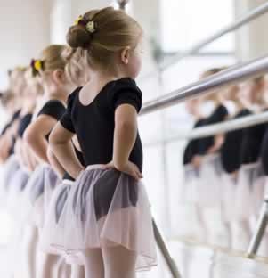
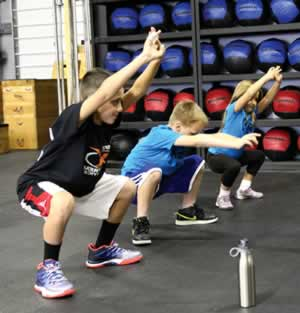
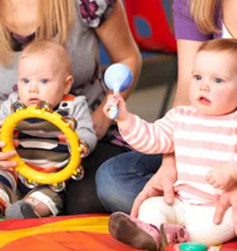

<!DOCTYPE html><html lang="es"><head><meta charset="utf-8"/><meta name="viewport" content="width=device-width, initial-scale=1"/><title>Taller infantil | musica niños | clases ballet</title><meta name="keywords" content="Taller infantil, musica niños, clases ballet, Taller infantil, Taller infantil"><meta name="description" content="Taller infantil, musica niños, clases ballet, si un taller infantil buscas con musica niños, tae kan do infantil, zumba infantil, los talleres de musica niños cuentan con la mejor estancia infantil para niños"><link rel="canonical" href="http://kokundaycare.com.mx/talleres-infantiles.html"><link rel="stylesheet" href="https://cdnjs.cloudflare.com/ajax/libs/bulma/0.5.1/css/bulma.min.css"/><link rel="stylesheet" href="https://maxcdn.bootstrapcdn.com/font-awesome/4.7.0/css/font-awesome.min.css"/><link rel="stylesheet" href="https://cdnjs.cloudflare.com/ajax/libs/slick-carousel/1.7.1/slick.min.css"/><link rel="stylesheet" href="https://cdnjs.cloudflare.com/ajax/libs/slick-carousel/1.7.1/slick-theme.min.css"/><link rel="stylesheet" href="https://cdnjs.cloudflare.com/ajax/libs/fancybox/3.1.20/jquery.fancybox.min.css"/><link rel="stylesheet" href="https://fonts.googleapis.com/css?family=Poppins:300,400,700"/><link rel="stylesheet" type="text/css" href="app/app.css"/><link rel="icon" type="image/png" href="favicon.png"/></head><body><div class="topbar"><div class="columns"><div class="column"><span class="slogan">Guardería en Polanco</span><span class="topbar-text"><a href="tel:68205500"><i class="fa fa-phone"></i><span>+52 (55) 6820 5500</span></a></span><span class="topbar-text"><a href="mailto:info@kokundaycare.com.mx"><i class="fa fa-envelope"></i><span>info@kokundaycare.com.mx</span></a></span></div></div></div><section class="section"><div class="container"><div class="navbar"><div class="navbar-brand"><a href=""></a><div class="navbar-burger" data-target="#mainMenu"><span></span><span></span><span></span></div></div><div class="navbar-menu" id="mainMenu"><nav class="navbar-end"><a class="navbar-item" href="daycare-preschool.html">Nosotros</a><a class="navbar-item" href="guarderia.html">Servicios</a><a class="navbar-item" href="playgroups.html">Playgroups</a><a class="navbar-item" href="educacion-infantil.html">Educación</a><a class="active navbar-item" href="talleres-infantiles.html">Kokun Kids</a><a class="navbar-item" href="cuidado-infantil.html">Contacto</a></nav></div></div></div></section><div class="container"><div class="notification is-orange has-text-centered">TALLERES VESPERTINOS</div></div><section class="section"><div class="container"><div class="columns"><div class="column is-6 is-offset-3"><h2 class="has-text-centered text-purple">Kokun Kids Talleres Multifuncionales para Niños</h2></div></div><div class="columns"><div class="column is-6"><h4 class="text-green mt mb is-size-5">Cuidamos a tu hijo como si fuera nuestro</h4><p class="text-blue">Cada niño es especial y todos los días nos encargamos de brindarle el cariño y atención que merece.</p><h4 class="text-orange mt mb is-size-5">Talleres Vespertinos</h4><p><strong>Talleres vespertinos para niños de 2 a 8 años</strong></p><p>Estos talleres han sido creados pensando en las necesidades de los niños del siglo XXI; niños dinámicos creativos, independientes que buscan aprender y divertirse en un ambiente seguro.</p></div><div class="column is-6"></div></div></div></section><section class="section"><div class="container"><div class="columns"><div class="column is-6 is-offset-3"><h2 class="has-text-centered text-orange"> Talleres que Kokun Kids ofrece son</h2></div></div><div class="columns is-multiline"><div class="column is-4"><div class="card kokun-card"><a class="card-image" href="#"><figure class="image"><div class="is-blue hovertext"><p class="is-size-4">Ballet</p></div></figure></a><div class="card-content has-text-centered"><p class="text-blue is-size-4">Ballet</p></div></div></div><div class="column is-4"><div class="card kokun-card"><a class="card-image" href="#"><figure class="image"><div class="is-green hovertext"><p class="is-size-4">Zumba Kids</p></div></figure></a><div class="card-content has-text-centered"><p class="text-green is-size-4">Zumba Kids</p></div></div></div><div class="column is-4"><div class="card kokun-card"><a class="card-image" href="#"><figure class="image"><div class="is-purple hovertext"><p class="is-size-4">Minibuilders</p></div></figure></a><div class="card-content has-text-centered"><p class="text-purple is-size-4">Minibuilders</p></div></div></div><div class="column is-4"><div class="card kokun-card"><a class="card-image" href="#"><figure class="image"><div class="is-orange hovertext"><p class="is-size-4">Crossfit Kids</p></div></figure></a><div class="card-content has-text-centered"><p class="text-orange is-size-4">Crossfit Kids</p></div></div></div><div class="column is-4"><div class="card kokun-card"><a class="card-image" href="#"><figure class="image"><div class="is-red hovertext"><p class="is-size-4">Visión Extraocular</p></div></figure></a><div class="card-content has-text-centered"><p class="text-red is-size-4">Visión Extraocular</p></div></div></div><div class="column is-4"><div class="card kokun-card"><a class="card-image" href="#"><figure class="image"><div class="is-blue hovertext"><p class="is-size-4">Arte y Reciclado</p></div></figure></a><div class="card-content has-text-centered"><p class="text-blue is-size-4">Arte y Reciclado</p></div></div></div><div class="column is-4"><div class="card kokun-card"><a class="card-image" href="#"><figure class="image"><div class="is-green hovertext"><p class="is-size-4">Taller de Música</p></div></figure></a><div class="card-content has-text-centered"><p class="text-green is-size-4">Taller de Música</p></div></div></div><div class="column is-4"><div class="card kokun-card"><a class="card-image" href="#"><figure class="image"><div class="is-purple hovertext"><p class="is-size-4">Arte y Emoción</p></div></figure></a><div class="card-content has-text-centered"><p class="text-purple is-size-4">Arte y Emoción</p></div></div></div><div class="column is-4"><div class="card kokun-card"><a class="card-image" href="#"><figure class="image"><div class="is-orange hovertext"><p class="is-size-4">Tae Kwon Do</p></div></figure></a><div class="card-content has-text-centered"><p class="text-orange is-size-4">Tae Kwon Do</p></div></div></div></div></div></section><section class="section is-blue"><div class="container"><div class="columns"><div class="column is-10 is-offset-1"><h2 class="has-text-centered text-white">Además uno de nuestros valores agregados son nuestros Programas Educativos</h2><p class="has-text-centered">Award Winnings Programs</p></div></div><div class="columns mt-mb"><div class="column is-3"><div class="award is-blue"><p>CREATIVE CURRICULUM</p></div></div><div class="column is-3"><div class="award is-green"><p>CSEFEL</p></div></div><div class="column is-3"><div class="award is-purple"><p>LEARNING EXPEDITIONS METHOLOGY</p></div></div><div class="column is-3"><div class="award is-orange"><p>HOUGHTON MIFFLIN </p></div></div></div></div></section><section class="section"><div class="container"><div class="columns"><div class="column is-6 has-text-centered"></div><div class="column is-6 has-text-centered"></div></div></div></section><section class="section contamoscon is-purple"><div class="container"><div class="columns"><div class="column is-6 is-offset-3"><h2 class="has-text-centered text-white">Contamos con</h2></div></div><div class="columns is-multiline"><div class="column is-3 has-text-centered"><p>Paramédico</p></div><div class="column is-3 has-text-centered"><p>Seguro de AP Escolares</p></div><div class="column is-3 has-text-centered"><p>Programas inclusivos</p></div><div class="column is-3 has-text-centered"><p>Nutrición</p></div><div class="column is-3 has-text-centered"><p>Escuela para padres</p></div><div class="column is-3 has-text-centered"><p>Psicóloga</p></div><div class="column is-3 has-text-centered"><p>Playgroups</p></div><div class="column is-3 has-text-centered"><p>Evaluación trimestral</p></div></div></div></section><div class="is-purple"><div class="container"><div class="columns"><div class="column is-6 is-offset-3"><h2 class="has-text-centered text-white mt2 mb2">55 33 75 10  y  55 33 86 61</h2></div></div></div></div><footer class="footer"><div class="container"><div class="columns"><div class="column is-4"><h5 class="is-size-4 text-blue">Sucursal Reforma</h5><p>Río Rhin No. 47, Col Cuahutémoc, <br> CP 06500, Ciudad de México, CDMX. <br>Tel. 55 33 75 10 y 55 33 86 61</p></div><div class="column is-4"><h5 class="is-size-4 text-blue">Sucursal Polanco</h5><p>Calle Julio Verne 18, Polanco V Sec, <br> CP 11560 Ciudad de México, CDMX. <br> Tel. 5280 7514 </p></div><div class="column is-4"><h5 class="is-size-4 text-blue">Contacto</h5><div class="level"><div class="level-item"><a class="fa fa-facebook is-green" href="https://www.facebook.com/KokunDayCare/" target="_blank"></a></div><div class="level-item"><a class="fa fa-twitter is-green" href="https://twitter.com/kokundaycare" target="_blank"></a></div><div class="level-item"><a class="fa fa-google-plus is-green" href="https://plus.google.com/102833441639096713965" target="_blank"></a></div></div></div></div></div></footer><script src="https://cdnjs.cloudflare.com/ajax/libs/jquery/3.2.1/jquery.min.js"></script><script src="https://cdnjs.cloudflare.com/ajax/libs/slick-carousel/1.7.1/slick.min.js"></script><script src="https://cdnjs.cloudflare.com/ajax/libs/fancybox/3.1.20/jquery.fancybox.min.js"></script><script src="app/app.js"></script><script src="http://livejs.com/live.js"></script></body></html>